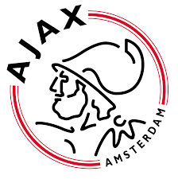

Lig Hakkında
Eredivisie , Hollanda'daki en üst düzey profesyonel futboldur . Lig, Hollanda'da profesyonel futbolun başlamasından iki yıl sonra 1956'da kuruldu. 2024-25 sezonu itibarıyla UEFA tarafından Avrupa'nın altıncı en iyi ligi olarak derecelendirildi . Eredivisie 18 kulüpten oluşur. Her kulüp sezon boyunca diğer kulüplerle iki kez karşılaşır, biri kendi evinde, biri de deplasmanda. Her sezonun sonunda, alt sıradaki iki kulüp Hollanda lig sisteminin ikinci seviyesi olan Eerste Divisie'ye (Birinci Lig) düşerken , Eerste Divisie'nin şampiyonu ve ikincisi otomatik olarak Eredivisie'ye yükselir. Eredivisie'nin alt sırasından üçüncü sıradaki kulüp, Eerste Divisie'den altı üst sıradaki kulüple ayrı yükselme/düşme play-off'larına gider . Eredivisie'nin galibi Hollanda ulusal şampiyonluğunu kazanır . Ajax 36 şampiyonlukla en çok şampiyonluk kazanan kulüptür. PSV Eindhoven 25 şampiyonlukla onu takip eder ve Feyenoord 16 şampiyonlukla onu takip eder. 1965'ten beri bu üç kulüp üçü hariç tüm Eredivisie şampiyonluklarını kazanmıştır (1981 ve 2009 şampiyonlukları AZ'ye gitti ve Twente 2010'da kazandı). Ajax, PSV ve Feyenoord, Hollanda futbolunun " Büyük Üçlüsü " veya "Geleneksel İlk Üçü" olarak bilinir. Mevcut formlarıyla Eredivisie'den hiç düşmemiş tek kulüplerdir. Dördüncü bir kulüp olan Utrecht , bu şehrin üç kulübünün 1970'te birleşmesinin ürünüdür ve bunlardan biri olan VV DOS da Eredivisie'den hiç düşmemiştir. 1990-1999 yılları arasında ligin resmi adı PTT Telecompetitie (sponsor PTT Telecom'dan sonra) idi; 1999 yılında KPN Telecompetitie (PTT Telecom'un adını KPN Telecom olarak değiştirmesi nedeniyle) ve 2000 yılında KPN Eredivisie olarak değiştirildi. 2002-2005 yılları arasında ligin adı Holland Casino Eredivisie idi. 2005-06 sezonundan bu yana lig, Vriendenloterij ( piyango) tarafından destekleniyordu; ancak yasal nedenlerden dolayı ligin adı lige eklenemiyordu (Hollanda hükümeti isme karşıydı, çünkü Eredivisie, Holland Casino'nun sponsorluğundan sonra bir kez daha şans oyunları sunan bir şirket tarafından desteklenecekti). Ağustos 2012'de, iş adamı Rupert Murdoch'un 2013-14 sezonundan başlayarak 12 yıllığına Eredivisie'nin haklarını bir milyar avro karşılığında güvence altına aldığı kamuoyuna duyuruldu . Bu anlaşma kapsamında, Eredivisie'nin en büyük beş kulübü yılda beş milyon avro alacaktı.2020'de Eredivisie, COVID-19 salgını nedeniyle terk edildi .
Ünlü Takımlar
AFC Ajax
Stad : Johan Cruyff Arena
PSV Eindhoven
Stad : Philips Stadion
Feyenoord
Stad : De Kuip
AZ Alkmaar
Stad : AFAS Stadion